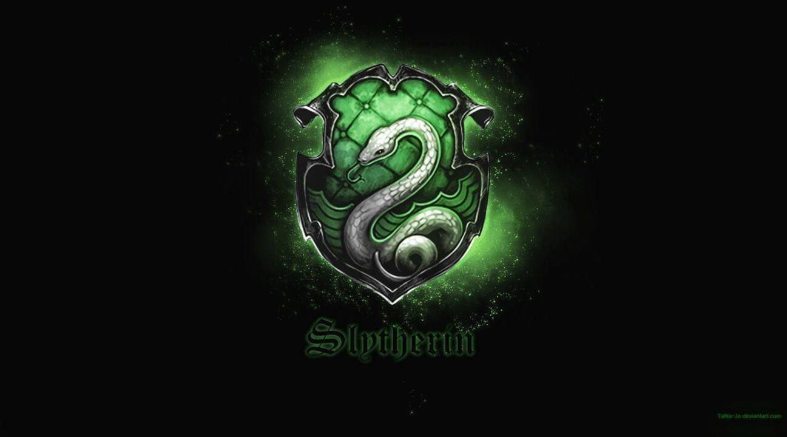

Hogwarts foi fundada por volta de 993 d.C. por dois bruxos, Godric Grifnória e Salazar Sonserina, e duas bruxas, Helga Lufa-Lufa e Rowena Ravenclaw. Cada um deles continha um aspecto de personalidade que queriam nos novos alunos. No entanto, pouco depois da escola ser fundada, Sonserina discutiu com os outros fundadores a respeito da pureza de sangue. Sonserina quis admitir apenas os alunos de puro sangue, enquanto os outros três fundadores discordaram. Sonserina deixou a escola logo depois de construir em segredo a Câmara Secreta. Quando seu verdadeiro herdeiro, o Herdeiro de Sonserina , voltasse à escola, ele ou ela seria capaz de abrir a Câmara e libertar o monstro que lá havia em função de purificar a escola de todos os alunos Nascidos-trouxas.

O Expresso de Hogwarts é o nome do trem que faz a viagem entre Londres, Estação King's Cross Plataforma Nove e Três Quartos e Estação de Hogsmeade. O trem sai da Plataforma 9¾ sem falhas em 1 de Setembro, às 11 horas da manhã, chegando a Estação de Hogsmeade no início da noite. Originalmente montado a vapor pelos trouxas que o construíram, o Expresso de Hogwarts agora funciona exclusivamente com magia.
"Uma solução ousada e controversa para o problema espinhoso finalmente foi sugerida pela Ministra da Magia Ottaline Gambol, que ficou muito intrigado com invenções trouxas e viu o potencial nos trens. " —Como o Expresso de Hogwarts chegou a ser utilizado

O Castelo de Hogwarts é um castelo mágico. Possui muitas torres e torreões, e foi construído há cerca de mil anos atrás por um arquiteto bruxo. Ele abriga a Escola de Magia e Bruxaria de Hogwarts. Se algum trouxa se aproximar do castelo, só veria um local em ruínas com um aviso de perigo. Também é protegido por vários feitiços antigos e encantamentos para proteger seus habitantes, fortes o suficiente para resistir o efeitos do tabu.
"O castelo é uma fortaleza de magia antiga. " — Alvo Dumbledore

O brasão de Hogwarts é formado por quatro animais e uma grande letra “H” no meio deles. Embaixo, uma faixa, com os dizeres: “Draco Dormiens Nunquan Titillandus”, que significa algo como “Nunca Cutuque um Dragão Adormecido”. Os animais encontrados no brasão são um leão, representando a Grifinória, uma cobra, representando a Sonserina, um texugo, representando a Lufa-Lufa e um corvo, representando a Corvinal. E no meio, o grande “H” de Hogwarts, unindo as quatro casas, além das características dos alunos, eles incorporam os quatro elementos: fogo, água, terra e ar.
"O lema sugere que no caso de encontrar um perigo pela frente, não parta para a provocação. "

Godric Grifinória levou à então nova escola uma maneira igualitária de dividir os alunos. Em uma sociedade bruxa, na qual se dividiam os pró trouxas, os contra e os “esnobes” puro sangue, o maior legado de Grifinória foi o Chapéu Seletor. O objetivo do artefato era favorecer as virtudes de coragem e heroísmo. Os quatro fundadores o encantaram com suas personalidades para que as seleções fossem feitas depois de suas mortes. O bruxo também era o maior duelista de seu tempo, tanto com a varinha quanto com a espada que leva seu nome.
“…Quem sabe sua morada é Grifinória, Casa onde habitam os corações indômitos. Ousadia e sangue-frio e nobreza Destacam-se os alunos da Grifinória dos demais…”

Helga Lufa-Lufa criou a maioria das receitas servidas na escola até hoje, e ela era especialista em encantos feitos em alimentos. Hufflepuff era muito compassiva e dona de uma personalidade muito amorosa. Ela trouxe seres de diversos ramos da magia para trabalharem na escola, e é a responsável por transformar Hogwarts em santuário para os elfos domésticos, que são os trabalhadores da escola até hoje. Ela brindava com seus alunos usando um cálice de ouro, sua marca registrada.
“Quem sabe é na Lufa-Lufa que você vai morar, Onde seus moradores são justos e leais Pacientes, sinceros, sem medo da dor…”

Rowena Corvinal era praticamente uma super estrela da bruxaria. Sua inteligência e sagacidade eram mundialmente reconhecidas. Sua casa prioriza a sabedoria. Rowena usava um diadema encantado, que teria o objetivo de aumentar a sabedoria de quem o usasse.
“Ou será a velha e sábia Corvinal, A casa dos que têm a mente sempre alerta, Onde os homens de grande espírito e saber Sempre encontrarão companheiros seus iguais..”

Salazar Sonserina se afastou da escola por sua visão preconceituosa, mas era um bruxo extremamente respeitado por suas habilidades. Especialista em leitura de mentes e naturalmente capaz de compreender a língua das cobras, também criava feitiços restauradores. Antes de deixar Hogwarts depois do duelo com Grifinória, no entanto, ele construiu a Câmara dos Segredos, sem o conhecimento dos outros três fundadores. O objetivo era “purificar” a escola de mestiços ou nascidos trouxas, através da cobra enfeitiçada que lá se escondia. A Câmara foi aberta por Tom Riddle, que se tornou Voldemort.
“Ou quem sabe a Sonserina será a sua casa E ali fará seus verdadeiros amigos, Homens de astúcia que usam quaisquer meios Para atingir os fins que antes colimaram”
Segundo Beedle, o Bardo, as Relíquias da Morte teriam sido um presente da Morte para três irmãos bruxos, por sua perícia em magia. Duas dessas maravilhas fariam seu possuidor aparentemente o mais poderoso bruxo do mundo, tanto por seu apelo combativo ou por sua habilidade de reverter a morte de alguém; a capa, no entanto, quase sempre é desprezada por sua aparente inutilidacu Através dos séculos, apenas a Varinha das Varinhas teve uma história relativamente conhecida, uma vez que quase sempre pertenceu a algum bruxo das trevas que se gabava de ser o mais poderoso do mundo. A Pedra da Ressurreição e a Capa da Invisibilidade nunca foram encontradas, talvez por seus possuidores não conhecerem sua história ou serem prudentes demais para alardear sua posse. Acredita-se, entre os bruxos mais esclarecidos, que a Morte não criou realmente as Relíquias, mas que foram criadas pelos irmãos Peverell, um trio de bruxos extraordinariamente talentosos, que usaram todo seu talento para produzir a varinha mais mortal, um meio de reverter a morte, e um modo de se esconder da mesma.